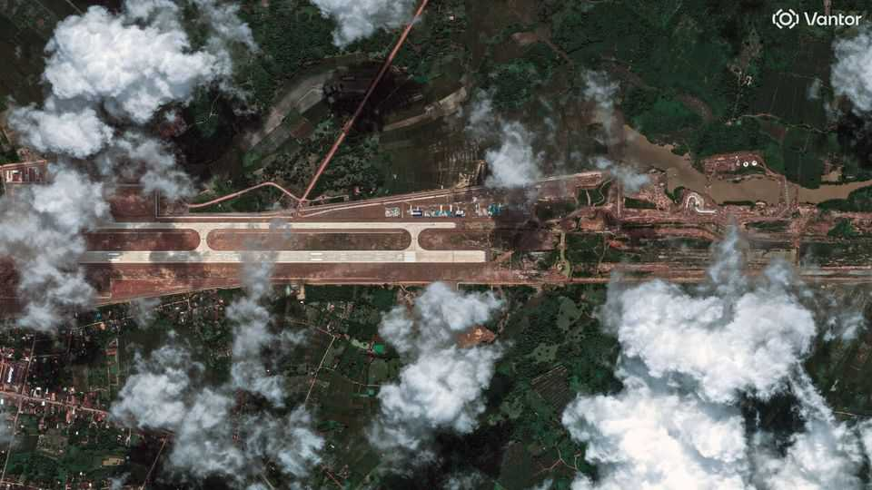
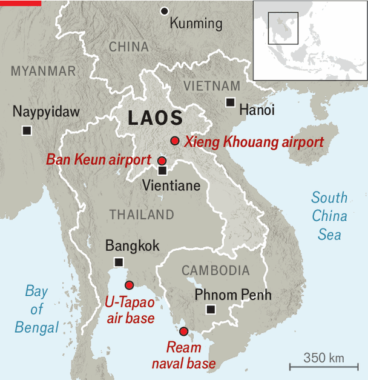

Is China building an air base in Laos?
It’s just a pilot school, the two governments say

Oct 8th 2026
OFFICERS OF THE Lao People’s Army protest that a new military airport being built north of the capital, Vientiane, is just a place to train its air-force pilots. That is why, they say, China has been laying out a long runway there since late 2025. But Western governments and their Asian allies are not so sure. An announcement on September 29th that China and Laos had established what they called a “joint support centre” at Ban Keun, the site of a CIA airfield during the Vietnam war, has some analysts concerned that Laos may have opened the door to the first Chinese air base in mainland South-East Asia.
That would be a huge step for China, which has only one overseas military base of its own at present, a logistics hub in Djibouti that lets its navy operate near sea lanes it uses to ship goods to Europe. Another naval base in Cambodia is jointly operated with the Cambodian navy. Chinese equipment there may also serve a signals-intelligence function, snooping on American forces operating from nearby U-Tapao air base in Thailand, an American ally. But it is not yet clear what China would want with an air base only about 300km from its southern border.

For the moment it is uncertain how many troops or planes there are at Ban Keun. But if China did want to base them in Laos, the host government might find it difficult to object. One of South-East Asia’s poorest countries, Laos is indebted to its northern neighbour to the tune of $5bn, around 30% of its GDP. It blew much of that by placing bad bets on hydropower dams and a high-speed rail line to the southern Chinese city of Kunming. When Laos’s currency, the kip, collapsed under the weight of all that debt in 2022, China rescheduled it and thus saved its neighbour from default. Laos has yet to report that it has resumed payments.
One Asian diplomat in Laos says that the government does not answer questions about the airfield beyond reciting talking points from the thin statement announcing the facility last month. But that is not unusual in Laos, where an ambassador posted to the capital from a friendly country says that the government is a black box. “One of the great challenges of operating in Laos is that it’s so opaque that you end up relying on rumours,” he explains.
One rumour that has been doing the rounds in Vientiane is that China has been looking for an air base in the country for some time. Speculation centred for a while on the airport at Xieng Khouang, where a Chinese company began lengthening the runway to 3km, long enough for military jets, in 2024. But AVIC, the Chinese company, completed the works in June 2025 and handed the airfield back to Laos.
When asked by your correspondent, one Lao military officer says that Western fears of a Chinese base are overblown. “Our current constitution doesn’t allow foreign militaries to be present in the country.” The party leadership is said to be furious about media reports to the contrary. But merely pointing to laws will do little to smooth over Western anxieties about the intentions of the communist party that rules Laos.
There is little goodwill for America, should it want to try to block a Chinese air base. Bad blood persists from the Vietnam war, during which America bombed Laos and left behind tens of millions of unexploded munitions. Donald Trump did not improve things when, last year, he slapped a 48% tariff, one of the highest anywhere, on imports from Laos. An even bigger irritant for Lao bigwigs has been Mr Trump’s determination to deport hundreds of people to Laos, many of them ethnic Hmong born outside Laos to refugee parents who fought the communist takeover in the 1970s. To get his way, Mr Trump has ordered American officials to deny nearly all visa applications from Laos.
The only real rival for Chinese influence in Laos is Vietnam. The two South-East Asian states refer to each other as “fraternal countries”, owing to their shared revolutionary heritage. But there is little doubt about who is the elder brother. Laos’s ruling party was born as an offshoot of Vietnam’s communist party, and many Lao leaders were educated in Vietnam and speak Vietnamese. Vietnam has long cast a wary eye on Chinese activity to its west, given its historical tensions with China and more recent maritime disputes with China to its east. ■
For exclusive coverage of Asian politics, economics and security, sign up to Asia Bulletin, our weekly subscriber-only newsletter.